시작하기
처음 열면 나오는 화면이에요. 1분이면 준비 끝!
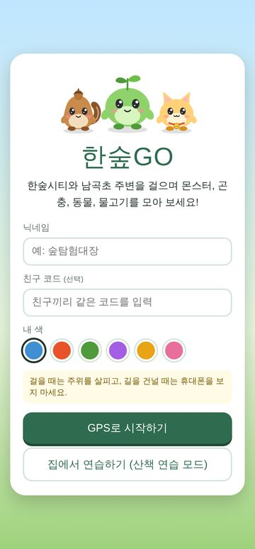
닉네임과 친구 코드
- 닉네임을 적어요. 친구들에게 보이는 이름이에요. (나쁜 말은 쓸 수 없어요 🙂)
- 친구 코드는 같이 놀 친구·가족과 똑같이 적어요. 예: FAMILY-77
같은 코드끼리 도감 순위를 보고, 선물하고, 함께 걸을 수 있어요. 나중에 설정에서 넣어도 돼요. - 내 색을 고르고 GPS로 시작하기를 눌러요. 위치 사용을 허용해 주세요.
지도 보기
실제 동네 지도 위에 내 위치(파란 점)와 친구들이 나타나요.
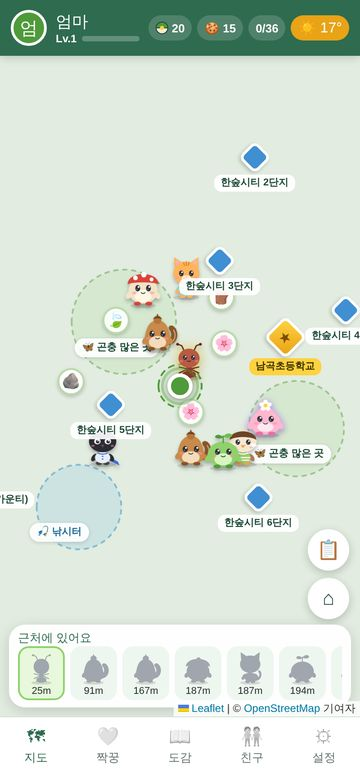
지도에서 보이는 것
| 보이는 것 | 하는 일 |
|---|---|
| 🐞🐱🐟 캐릭터 | 가까이 가서(초록 원 안) 누르면 잡기 화면이 열려요. 15분마다 새로 나와요. |
| 🔷 거점 | 가까이 가서 누르면 숲볼·간식·재료를 받아요. 5분마다 다시 받을 수 있어요. |
| ⭐ 남곡초등학교 | 특별 거점! 하루 한 번 특별한 친구가 나와요. |
| 🍃🪨🌸 재료 | 가까이 가서 누르면 주워요. 가구 만들기에 써요. |
| 📋 버튼 | 오늘의 할 일과 계절 행사. 받을 보상이 있으면 숫자가 떠요. |
| 근처에 있어요 | 아래 줄에 가까운 친구들과 거리가 나와요. |
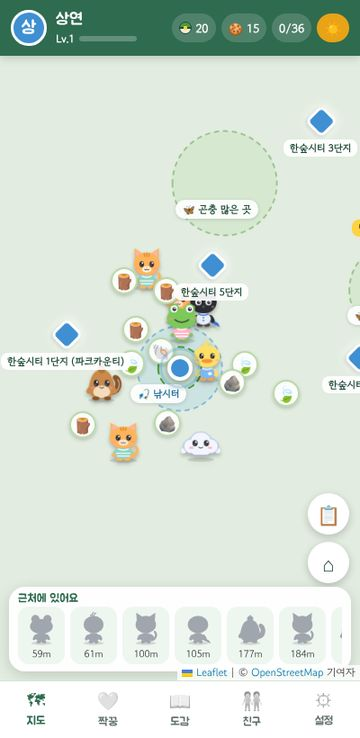
잘 나오는 곳
- 🎣 한숲물빛공원 연못: 물고기, 꽥꽥이(오리), 개굴돌이(개구리)
- 🦋 산내음공원·햇빛공원: 곤충, 깡총토끼, 도토리람
- 🏫 남곡초등학교 주변: 책벌레뭉, 종소리냥, 아주 드물게 전설의 한숲왕
- 🌙 밤(저녁 7시~아침 6시): 반짝반디, 달빛토끼, 별똥이, 고슴뭉
같은 시간·같은 장소에서는 친구들에게도 똑같은 캐릭터가 나와요. 함께 찾으러 가 보세요!
잡기 · 4가지 방법
종류마다 잡는 방법이 달라요. 처음 만난 친구는 도감에 새로 등록돼요.
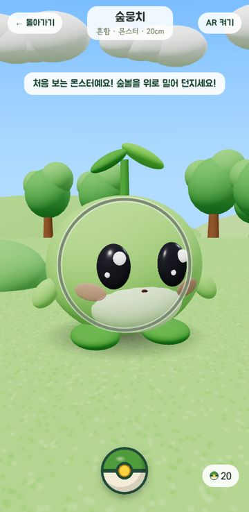
👾 몬스터
숲볼 던지기: 아래 숲볼을 손가락으로 위로 쭉 밀어 던져요. 줄어드는 링이 작을 때 맞히면 더 잘 잡혀요.
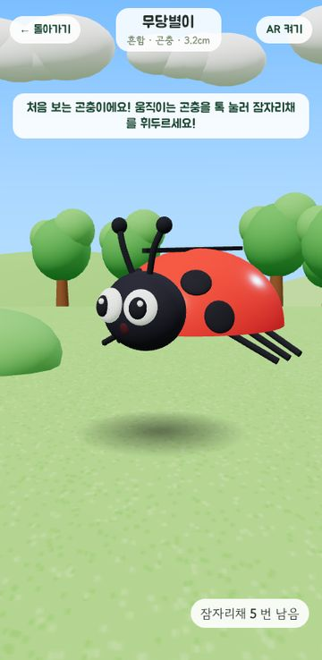
🐞 곤충
잠자리채: 날아다니는 곤충을 톡 눌러요. 한 마리에 5번까지 휘두를 수 있어요.
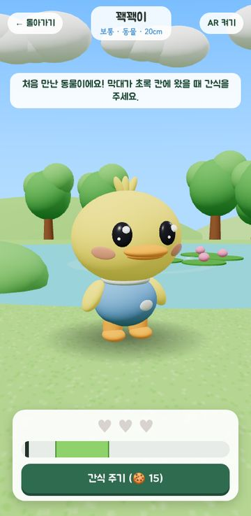
🐱 동물
간식 주기: 움직이는 막대가 초록 칸에 있을 때 간식 주기! 하트 3개가 차면 친구가 돼요.
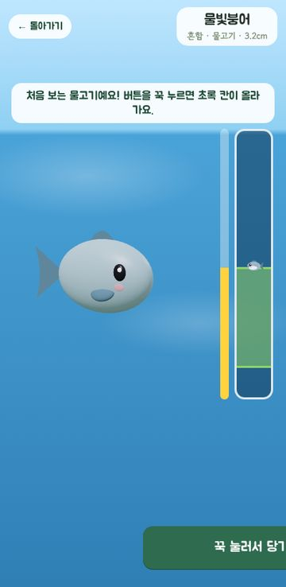
🐟 물고기
낚시: 버튼을 꾹 누르면 초록 칸이 올라가요. 물고기를 칸 안에 붙잡아 두면 낚여요.
도감
몬스터 16, 곤충 8, 동물 8, 물고기 4 · 모두 36종을 모아 보세요.
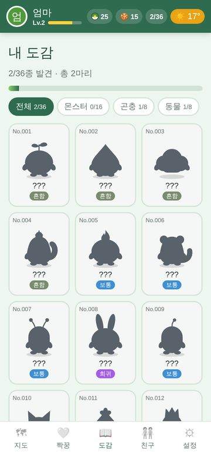
모은 친구 보기
- 못 만난 친구는 그림자(???)로 보여요. 눌러 보면 어디에 사는지 힌트가 나와요.
- 만난 친구를 누르면 3D로 빙글빙글 돌려 볼 수 있어요.
- 💛 짝꿍으로 정하기로 그 친구를 짝꿍으로 데려올 수 있어요.
짝꿍 키우기
아래 💛 짝꿍 탭. 잡은 친구 하나와 함께 지내며 키워요.
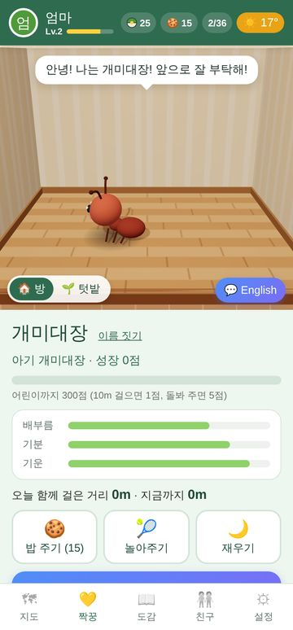
돌보기
- 🍪 밥 주기 · 🎾 놀아주기 · 🌙 재우기로 배부름·기분·기운을 채워 줘요.
- 짝꿍을 톡 누르면 쓰다듬어요. 기뻐하는 표정을 지어요.
- 같이 걸으면 쑥쑥 자라요 (10m마다 1점). 지도에서 짝꿍이 따라다녀요.
- 성장 점수가 쌓이면 아기 → 어린이 → 어른으로 진화! 동물 친구는 진화할 때마다 옷이 바뀌고, 어른이 되면 왕관을 써요.
- 이름 짓기로 짝꿍 이름을 정할 수 있어요.
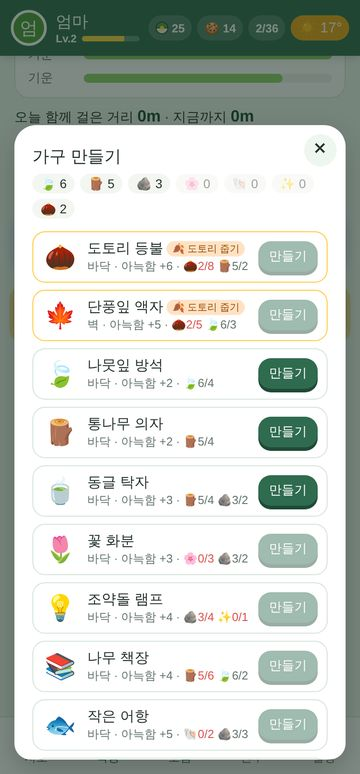
방 꾸미기
- 동네에서 주운 재료로 🔨 가구 만들기.
- 🛋️ 방 꾸미기에서 빈 자리를 눌러 가구를 놓아요.
- 방이 아늑할수록 짝꿍 기분이 덜 떨어지고, 하루 한 번 성장 보너스를 받아요. 버섯 침대가 있으면 침대에서 자요.
🍂 계절 행사 기간에는 그 계절에만 만들 수 있는 한정 가구도 나와요.
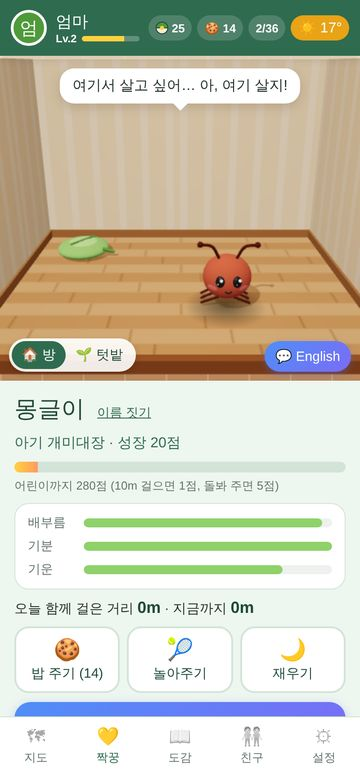
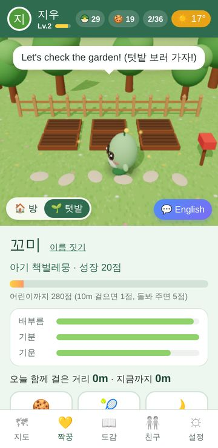
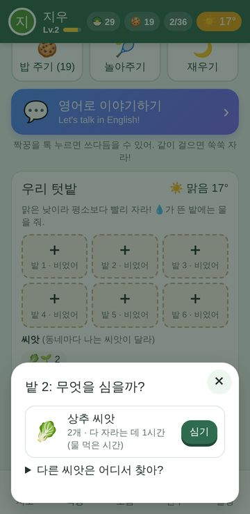
짝꿍이랑 영어 배우기
짝꿍 방의 💬 영어로 이야기하기. 미국 초등학생이 집·학교에서 쓰는 쉬운 말로 이야기해요.
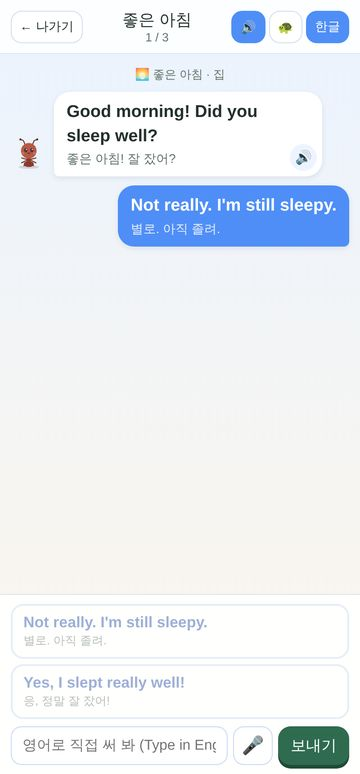
영어로 이야기하기
- 짝꿍이 영어로 말하고(소리), 영어 자막과 한글 뜻이 함께 나와요.
- 대답은 세 가지로 할 수 있어요: 선택지 누르기 · 직접 쓰기 · 🎤 말하기
- 위쪽 버튼: 🔊 소리 켜기/끄기 · 🐢 천천히 · 한글 뜻 보기/숨기기
- 18가지 장면(좋은 아침, 학교 가는 길, 점심시간, 생일 파티…). 하루 3번까지 짝꿍이 쑥쑥 자라요.
- 배운 표현은 📘 표현 노트에 모여요.
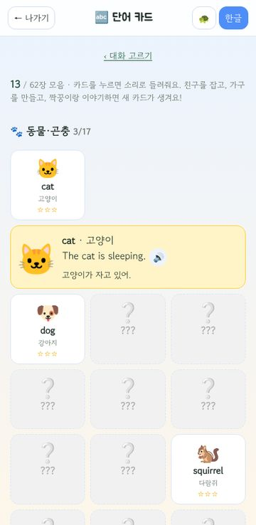
🔤 단어 카드
잡은 친구, 만든 가구, 거둔 작물, 대화 속 낱말이 그림 카드 62장으로 모여요. 누르면 소리와 예문!
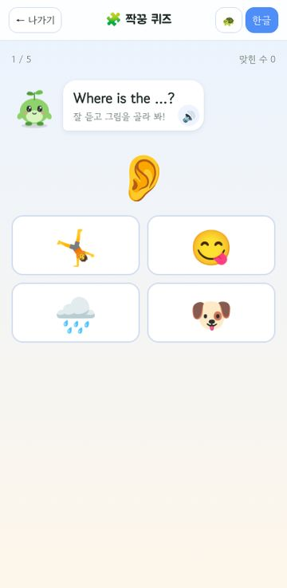
🧩 짝꿍 퀴즈
"What's this?" 그림을 보고 영어를 고르거나, 소리를 듣고 그림을 골라요. 한 판 5문제.
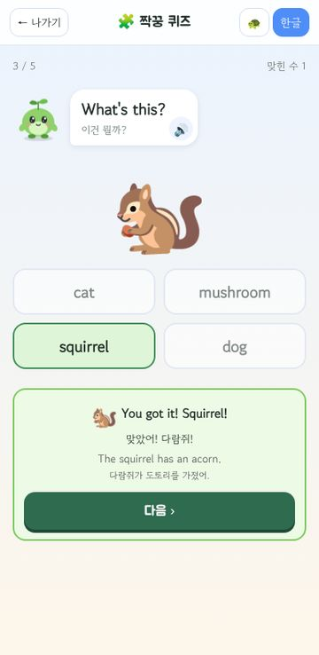
⭐ 복습
틀린 낱말·오래 안 본 낱말이 먼저 나와요. 맞힐수록 카드에 ★이 늘어요.
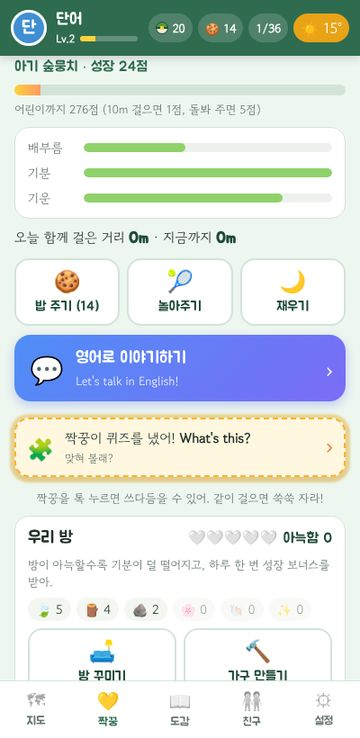
🎁 깜짝 퀴즈
짝꿍 방에 가끔 "퀴즈를 냈어!" 카드가 떠요. 하루 3번까지.
오늘의 할 일 · 계절 행사
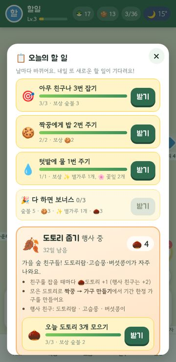
📋 오늘의 할 일
- 지도 오른쪽 📋 버튼. 날마다 할 일 3가지가 바뀌어요.
(잡기 하나 · 짝꿍·영어 하나 · 산책·텃밭·친구 하나) - 하나 끝내면 받기로 숲볼·간식·재료를 받아요. 셋 다 하면 보너스!
🍂 계절 행사
| 기간 | 행사 | 행사 재료 |
|---|---|---|
| 3~5월 | 🌸 벚꽃 축제 | 💮 벚꽃잎 |
| 6~8월 | 🌙 반딧불 여름밤 | 💫 반딧불빛 |
| 9~11월 | 🍂 도토리 줍기 | 🌰 도토리 |
| 12~2월 | ⛄ 눈사람 만들기 | ⚪ 눈뭉치 |
행사 친구 3종이 3배 자주 나오고, 모은 재료로 기간 한정 가구를 만들어요. 만든 가구는 계절이 지나도 그대로예요.
친구와 함께
아래 🧑🤝🧑 친구 탭. 같은 친구 코드를 쓰는 사람끼리 함께 놀아요. (내 위치는 공유되지 않아요.)
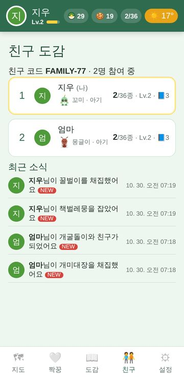
🏆 순위·소식
친구들의 도감 순위와 누가 뭘 잡았는지 소식을 봐요.
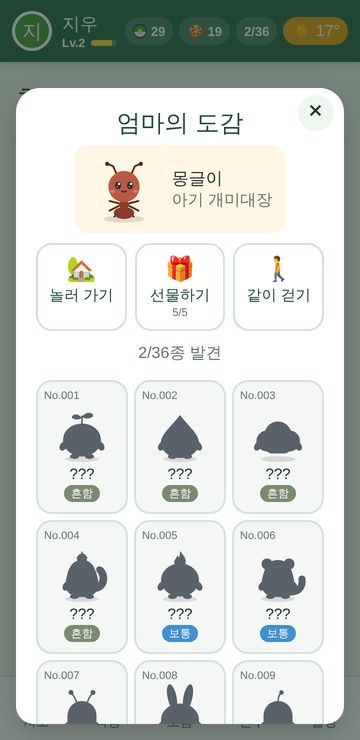
👋 친구 누르기
친구 이름을 누르면 놀러 가기 · 선물하기 · 같이 걷기.
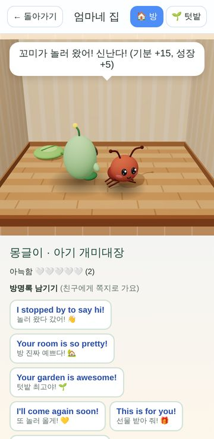
🏡 놀러 가기
친구 방과 텃밭에 내 짝꿍과 놀러 가요. 목마른 밭에 물을 주고, 방명록 스티커를 남겨요.
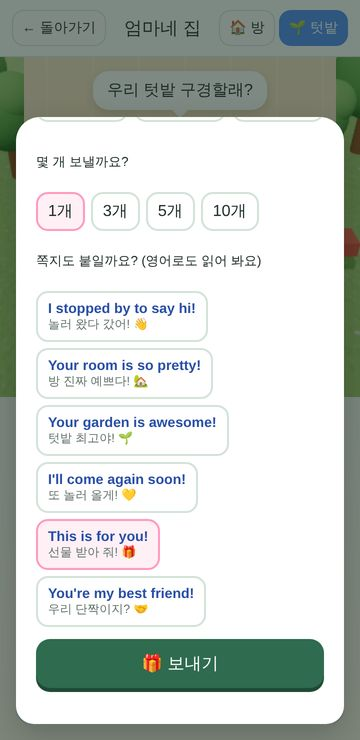
🎁 선물하기
간식·재료·씨앗·작물을 하루 5번까지 보내요. 쪽지는 정해진 고운 문장 중에서 골라요.
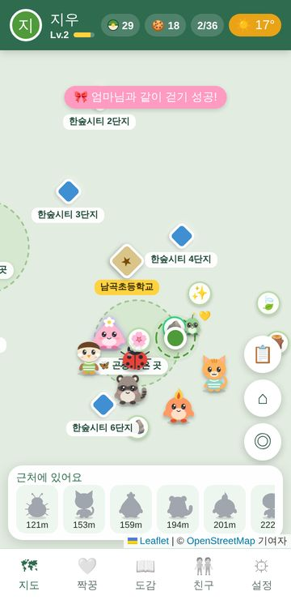
🚶 같이 걷기
1시간 동안 둘이 합쳐 1km! 성공하면 둘 다 🎀우정 리본을 받아요.
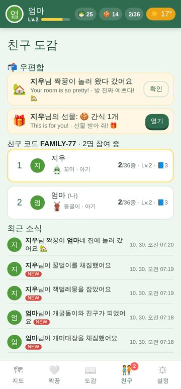
📬 우편함
받은 선물과 방명록은 친구 탭 위쪽 우편함에서 열어요.
보호자 안내
설정 탭 아래쪽 👪 보호자에 있어요. 처음에 보호자 비밀번호 4자리를 만들면, 설정이 비밀번호로 잠겨요.
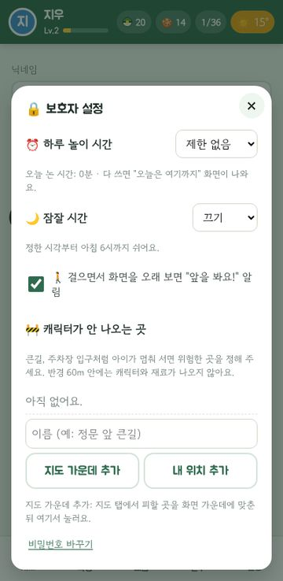
🔒 보호자 설정
- ⏰ 하루 놀이 시간 (30분~2시간): 화면을 보고 있는 시간만 세요.
- 🌙 잠잘 시간 (밤 8·9·10시 ~ 아침 6시)
- 🚶 걸을 때 앞 보기 알림: 40초 넘게 걸으며 화면을 보면 "앞을 봐요!"
- 🚧 캐릭터가 안 나오는 곳: 큰길·주차장 입구처럼 위험한 곳을 정하면 반경 60m 안에는 캐릭터와 재료가 나오지 않아요. 지도에 빨간 점선으로 보여요.
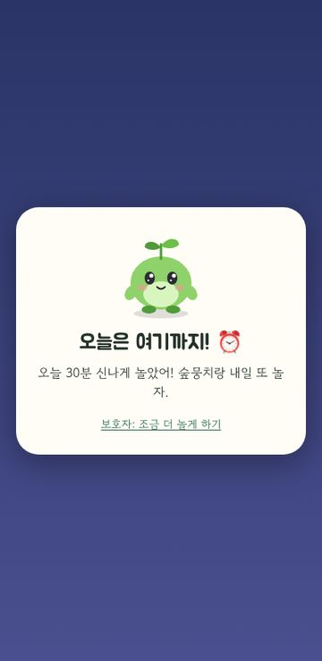
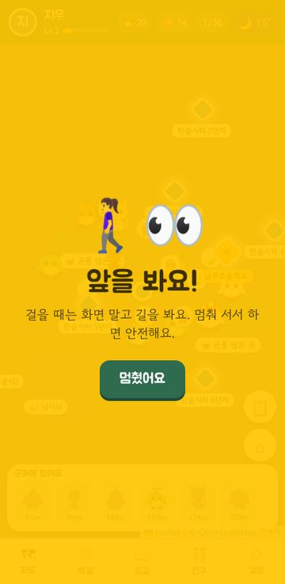
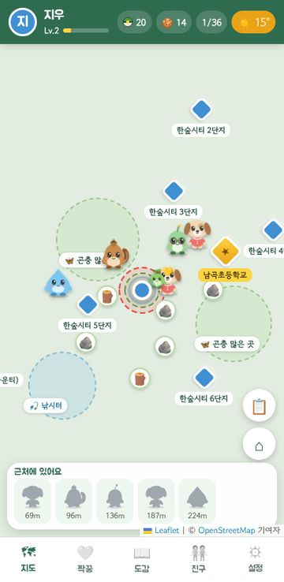
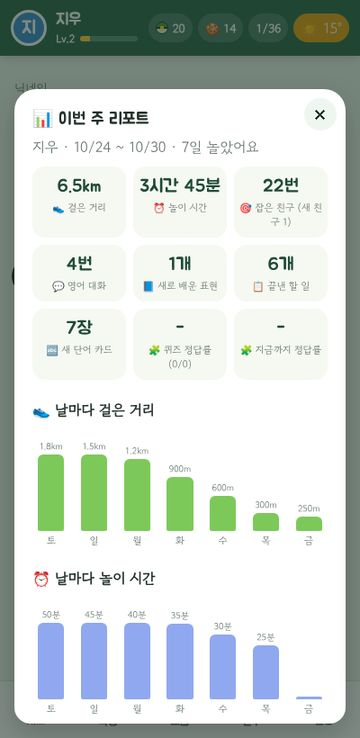
📊 이번 주 리포트
- 최근 7일 걸은 거리·놀이 시간 막대그래프
- 잡은 친구·새 친구, 영어 대화 횟수, 새로 배운 영어 표현·단어, 퀴즈 정답률, 끝낸 할 일
- 📋 리포트 복사해서 보내기로 카톡에 붙여 가족에게 보낼 수 있어요.
🙂 고운 말 지킴이
닉네임·짝꿍 이름·친구 코드에 욕설이나 나쁜 말은 쓸 수 없어요. 친구에게서 받은 이름에 나쁜 말이 섞여 있으면 '친구'로 가려서 보여 줘요.
기록과 보호자 설정은 이 휴대폰에만 저장돼요. 친구에게 공유되는 것은 닉네임·도감 기록·짝꿍·방 모습뿐이고, 위치는 공유되지 않아요.
안전 수칙 · 자주 묻는 질문
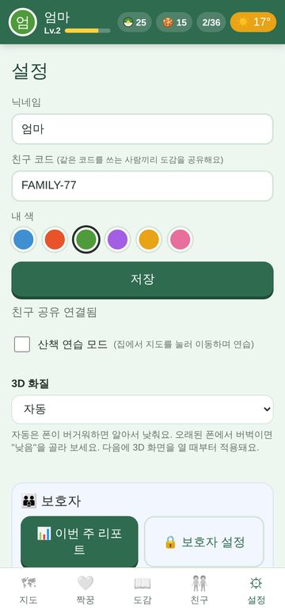
🚸 꼭 지켜요
- 걸으면서 화면만 보지 않아요. 길을 건널 때는 휴대폰을 내려 두어요.
- 어린이는 보호자와 함께, 단지 안에서 놀아요.
- 찻길·주차장에는 들어가지 않아요. 캐릭터가 거기 있어도 다음에 잡아요!
- 모르는 사람에게 친구 코드를 알려 주지 않아요.
📍 내 위치가 안 나와요
휴대폰 설정에서 위치 서비스를 켜고, 브라우저(크롬·사파리)의 위치 권한을 허용해 주세요. 실내에서는 위치가 덜 정확할 수 있어요. 집에서는 설정 → 산책 연습 모드로 놀 수 있어요.
🔇 짝꿍 영어 소리가 안 나요
휴대폰 무음 모드를 끄고 소리를 키워 주세요. 영어 대화 화면 위쪽 🔊 버튼이 켜져 있는지도 확인해 주세요. 목소리는 휴대폰에 들어 있는 음성을 써서 폰마다 조금 달라요.
🐢 3D가 느리거나 버벅여요
설정 → 3D 화질을 "낮음"으로 바꿔 보세요. 3D를 쓸 수 없는 폰에서는 자동으로 그림(2D)으로 보여 줘요.
👫 친구가 안 보여요
둘 다 설정에서 친구 코드를 똑같이(대소문자 상관없이) 적었는지 확인해 주세요. 인터넷이 연결되어 있어야 해요.
💾 휴대폰을 바꾸면 기록이 옮겨지나요?
기록은 지금 쓰는 휴대폰(브라우저)에 저장돼요. 다른 휴대폰이나 다른 브라우저에서는 새로 시작해요. 브라우저의 방문 기록·사이트 데이터를 지우면 기록도 지워지니 조심해 주세요.
💰 돈이 드나요?
아니요. 한숲GO는 무료이고 광고나 결제가 없어요.